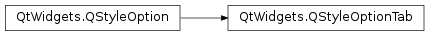

QStyleOptionTab¶
Detailed Description¶
The
PySide2.QtWidgets.QStyleOptionTabclass is used to describe the parameters for drawing a tab bar.The
PySide2.QtWidgets.QStyleOptionTabclass is used for drawing several built-in Qt widgets includingPySide2.QtWidgets.QTabBarand the panel forPySide2.QtWidgets.QTabWidget.An instance of the
PySide2.QtWidgets.QStyleOptionTabclass has typeSO_Taband version 3. The type is used internally byPySide2.QtWidgets.QStyleOption, its subclasses, andqstyleoption_cast()to determine the type of style option. In general you do not need to worry about this unless you want to create your ownPySide2.QtWidgets.QStyleOptionsubclass and your own styles. The version is used byPySide2.QtWidgets.QStyleOptionsubclasses to implement extensions without breaking compatibility. If you useqstyleoption_cast(), you normally do not need to check it.For an example demonstrating how style options can be used, see the Styles example.
See also
-
class
PySide2.QtWidgets.QStyleOptionTab¶ -
class
PySide2.QtWidgets.QStyleOptionTab(other) -
class
PySide2.QtWidgets.QStyleOptionTab(version) Parameters: - other –
PySide2.QtWidgets.QStyleOptionTab - version –
PySide2.QtCore.int
Constructs a
PySide2.QtWidgets.QStyleOptionTabobject, initializing the members variables to their default values.Constructs a copy of the
otherstyle option.- other –
-
PySide2.QtWidgets.QStyleOptionTab.StyleOptionType¶ This enum is used to hold information about the type of the style option, and is defined for each
PySide2.QtWidgets.QStyleOptionsubclass.Constant Description QStyleOptionTab.Type The type of style option provided ( SO_Tabfor this class).The type is used internally by
PySide2.QtWidgets.QStyleOption, its subclasses, andqstyleoption_cast()to determine the type of style option. In general you do not need to worry about this unless you want to create your ownPySide2.QtWidgets.QStyleOptionsubclass and your own styles.See also
QStyleOptionTab.StyleOptionVersion
-
PySide2.QtWidgets.QStyleOptionTab.StyleOptionVersion¶ This enum is used to hold information about the version of the style option, and is defined for each
PySide2.QtWidgets.QStyleOptionsubclass.Constant Description QStyleOptionTab.Version 3 The version is used by
PySide2.QtWidgets.QStyleOptionsubclasses to implement extensions without breaking compatibility. If you useqstyleoption_cast(), you normally do not need to check it.See also
QStyleOptionTab.StyleOptionType
-
PySide2.QtWidgets.QStyleOptionTab.TabPosition¶ This enum describes the position of the tab.
Constant Description QStyleOptionTab.Beginning The tab is the first tab in the tab bar. QStyleOptionTab.Middle The tab is neither the first nor the last tab in the tab bar. QStyleOptionTab.End The tab is the last tab in the tab bar. QStyleOptionTab.OnlyOneTab The tab is both the first and the last tab in the tab bar. See also
position
-
PySide2.QtWidgets.QStyleOptionTab.SelectedPosition¶ This enum describes the position of the selected tab. Some styles need to draw a tab differently depending on whether or not it is adjacent to the selected tab.
Constant Description QStyleOptionTab.NotAdjacent The tab is not adjacent to a selected tab (or is the selected tab). QStyleOptionTab.NextIsSelected The next tab (typically the tab on the right) is selected. QStyleOptionTab.PreviousIsSelected The previous tab (typically the tab on the left) is selected. See also
selectedPosition
-
PySide2.QtWidgets.QStyleOptionTab.CornerWidget¶ These flags indicate the corner widgets in a tab.
Constant Description QStyleOptionTab.NoCornerWidgets There are no corner widgets QStyleOptionTab.LeftCornerWidget Left corner widget QStyleOptionTab.RightCornerWidget Right corner widget See also
cornerWidgets
-
PySide2.QtWidgets.QStyleOptionTab.TabFeature¶ Describes the various features that a tab button can have.
Constant Description QStyleOptionTab.None A normal tab button. QStyleOptionTab.HasFrame The tab button is positioned on a tab frame See also
features
-
PySide2.QtWidgets.QStyleOptionTab.shape¶
-
PySide2.QtWidgets.QStyleOptionTab.text¶
-
PySide2.QtWidgets.QStyleOptionTab.icon¶
-
PySide2.QtWidgets.QStyleOptionTab.row¶
-
PySide2.QtWidgets.QStyleOptionTab.position¶
-
PySide2.QtWidgets.QStyleOptionTab.selectedPosition¶
-
PySide2.QtWidgets.QStyleOptionTab.cornerWidgets¶
-
PySide2.QtWidgets.QStyleOptionTab.iconSize¶
-
PySide2.QtWidgets.QStyleOptionTab.documentMode¶
-
PySide2.QtWidgets.QStyleOptionTab.leftButtonSize¶
-
PySide2.QtWidgets.QStyleOptionTab.rightButtonSize¶
-
PySide2.QtWidgets.QStyleOptionTab.features¶
© 2018 The Qt Company Ltd. Documentation contributions included herein are the copyrights of their respective owners. The documentation provided herein is licensed under the terms of the GNU Free Documentation License version 1.3 as published by the Free Software Foundation. Qt and respective logos are trademarks of The Qt Company Ltd. in Finland and/or other countries worldwide. All other trademarks are property of their respective owners.